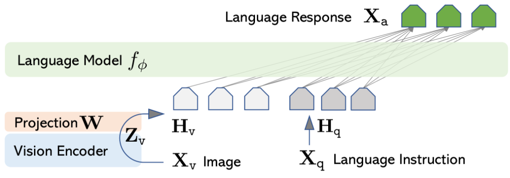
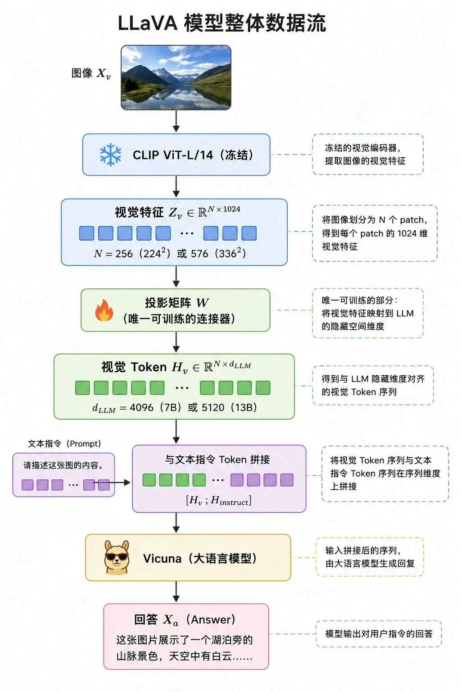
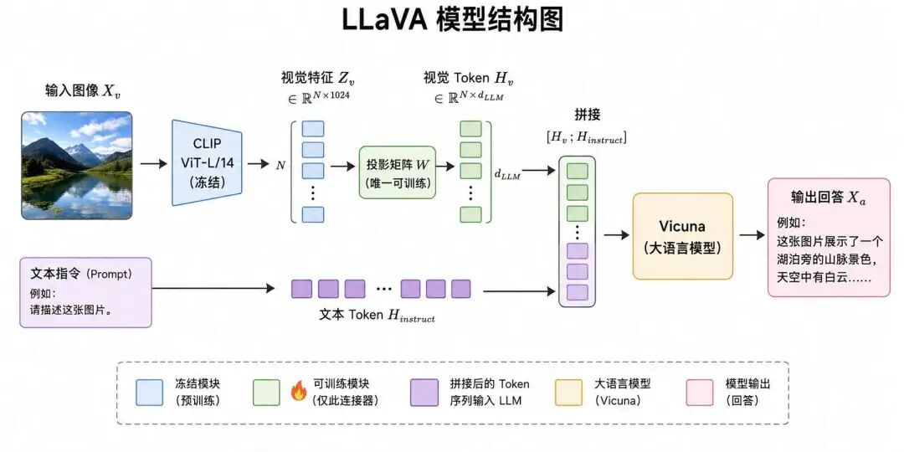

"苦涩的教训是：能够借力于算力的通用方法，最终总是最有效的。"--Rich Sutton, 2019
2023 年初的多模态人工智能领域，处在一个颇为尴尬的状态：CLIP、Flamingo、BLIP-2 等代表性工作相继问世，技术突破并不算少，然而落地到工业场景时，这些模型几乎都难以直接使用。
每条路线缺失的环节并不相同，短板也都相当明显，要理解 LLaVA 后来做了什么、为何影响如此深远，必须先把这几条路线各自的局限说清楚。
2020 年 OpenAI 发布 CLIP，核心思想其实并不复杂：用 4 亿对图文做对比学习，让图像和它的描述文本在同一个向量空间中靠近。
这一步在当时是巨大的突破，它第一次系统性地证明了一个判断--只要数据规模足够大，图文之间的语义对齐可以通过弱监督习得，无需依赖人工精标。
但 CLIP 存在一个根本性的局限：它所学到的，是一种判别式的对齐。给定一张图和一段文字，它可以判断两者是否匹配，却无法基于图像生成描述性内容。原因在于 CLIP 不具备生成能力，本质上只是一个图文检索器。
换一种角度表述：CLIP 学习的是图像与文本之间的对应关系，而非图像本身的内容。它能够判定"图像 A 与'猫在沙发上'这段文字相匹配"，却无法主动说出"图中有一只猫"，其输出永远是一个相似度分数，而非一段语言。
因此 2020 至 2022 这两年间，多模态社区面对一个明确的问题：如何让模型超越图文匹配，能够基于图像生成回答、与人对话？这需要在模型中嵌入一个具备生成能力的语言模型。
2022 年，DeepMind 发布的 Flamingo 给出了一种思路：既然纯对比模型不具备生成能力，那就将视觉特征输入到一个真正的大语言模型中，由 大语言模型（LLM） 承担生成任务。
实现层面，Flamingo 设计了一种"门控交叉注意力"机制，将视觉特征逐层注入 LLM 的自注意力层。这一设计颇为精巧，效果也相当亮眼，Flamingo 第一次让多模态模型具备了像样的少样本学习能力，仅需几个图文示例，模型就能模仿着回答新的问题。
然而 Flamingo 存在两个致命问题，使其几乎不可能落地到工业界。
其一是闭源。Flamingo 所使用的语言模型是 DeepMind 自研的 Chinchilla-70B，权重从未公开。研究者只能阅读论文、观看演示，却无法基于其进行任何二次开发。
其二是模型规模过大。70B 参数的模型，部署一次需要数十张 A100 显卡。即使权重得以公开，绝大多数中小企业仍无力承担其部署成本。
Flamingo 留给社区的，是一种"可见但不可及"的挫败感，这条路被证明可行，但无人能跟进。
2023 年初，Salesforce 团队发布的 BLIP-2，是真正与 LLaVA 同期、目标几乎一致的工作。理解 BLIP-2 的设计思路，是理解 LLaVA 设计哲学的关键参照系。
BLIP-2 的出发点是：将视觉编码器接入开源 LLM，但需要解决一个核心工程问题是视觉编码器输出的特征，如何转换为 大模型 能够消化的"语言"形式？
这个问题表面简单，实际相当棘手，视觉编码器（如 CLIP 的 ViT）输出的是一组高维视觉向量，这些向量的语义坐标系与 大模型 的词嵌入空间彼此独立，正如两种从未交流过的方言，直接拼接 大模型 完全无法理解。
BLIP-2 给出的答案是在两者之间插入一个"翻译模块"，即 Q-Former。Q-Former 是一个 12 层 Transformer（其中 6 层包含交叉注意力），包含 32 个可学习的"查询 Token"，参数量约 188M。其工作机制如下：
这套设计相当优雅，但训练过程颇为复杂，Q-Former 需要先在 1.29 亿对图文数据上完成三任务联合预训练（图文对比 ITC、图文匹配 ITM、图像 caption 生成 ITG），再接入冻结的 大模型（如 OPT 或 Flan-T5）。
这其中的关键之处在于 BLIP-2 在整个训练流程中，大模型 始终保持冻结。也就是说，BLIP-2 将所有视觉-语言对齐工作全部交由 Q-Former 这一中间模块完成，大模型 本身完全不更新，仅负责接收 Q-Former 提供的特征并输出回答。
这种设计有一个明显的优势：大模型 不动，训练成本可控，部署时 大模型 部分还可与纯文本场景共享。
但它也带有一项隐含代价，Q-Former 与 大模型 之间存在一道"语义瓶颈"。大模型 强大的指令理解、推理与对话能力均编码于其自身参数中；而视觉信息需要经由 Q-Former 这一外部模块进入，大模型 无法以其原生方式处理这些信息，只能被动接收 Q-Former 转译过的版本。
这种关系类似于：聘请了一位极为优秀的同传译员，但他始终无法直接听到原文，永远依赖另一位译员的间接转述。
正因如此，BLIP-2 虽然可以胜任基础的视觉问答，但在自由对话、指令跟随这些需要灵活理解的任务上，表现明显受限。
回到 2023 年 3 月那个时间节点，整体格局可以概括为：CLIP 不具备生成能力；Flamingo 闭源且模型过大；BLIP-2 开源但 大模型 冻结、能力受限。社区当时的主流思路是延续 Q-Former 这条路线继续做加法--设计更精巧的查询机制、引入更多辅助损失、扩大预训练数据规模。
LLaVA 团队（威斯康星大学麦迪逊分校、微软研究院、哥伦比亚大学）此时提出了一个反直觉的追问：
大模型 自身已具备相当强大的自注意力机制，它本就擅长在长上下文中寻找关联、进行推理。那么，为何要在视觉与语言之间设计一个复杂的中间网络？倘若仅使用一个最简单的线性变换，将视觉特征翻译成 大模型 词表中的"伪 Token"，再让 大模型 以其原生方式去消化这些视觉 Token，结果会如何？
这一追问的杀伤力在于：它从根本上质疑了过去两年所有"复杂桥接"工作的必要性。
倘若这条路径成立，则意味着：
但这条路径有一个不可绕开的前提：大模型 必须可微调。唯有让 大模型 自己学着"看懂"这些来自视觉的伪 Token，它才能真正以原生方式消化视觉信息，而非被动接收外部翻译。
这便是 LLaVA 与 BLIP-2 最根本的路线分歧：
| 路线 | 桥接结构 | LLM 状态 | 复杂性的承载位置 |
|---|---|---|---|
| BLIP-2 路线 | 复杂（Q-Former 188M） | 冻结 | 中间模块 |
| LLaVA 路线 | 极简（线性投影） | 可微调 | LLM 自身 |
LLaVA 选择了后者。而要看清这条极简路径为何能够成立，需要先回到视觉编码器这一端，理解 CLIP ViT-L/14 究竟为 大模型 准备了什么。
LLaVA 所使用的视觉编码器，全名是 CLIP ViT-L/14。这个名字里藏着两段独立的技术演化：ViT 指向 2020 年 Google 提出的 Vision Transformer 架构，CLIP 指向 OpenAI 在 2021 年基于 4 亿图文对训练出的对比学习模型。
两段演化叠加，造就了 LLaVA 视觉端的一个关键特殊性--它输出的并非普通意义上的"图像特征"，而是一种已与语言空间高度接近、且天然以 Token 序列形式组织的视觉表征。
LLaVA 投影层之所以能够极简至一层线性变换，全部根源便藏在这两段演化里，下文沿着这两段演化逐层展开。
ViT（Vision Transformer）由 Google 于 2020 年提出，其核心思想是将原本用于自然语言处理的 Transformer 架构直接迁移至图像领域。整个工作流程可概括为四步：
第一步：分块（patchify）。给定一张 224×224 的输入图像，将其切分为若干固定大小的 patch（如 16×16 像素）。224 ÷ 16 = 14，意味着图像被切为 14×14 = 196 个 patch。这一步在概念上等同于自然语言中将一段文字切分为词或子词单元。
第二步：嵌入（patch embedding）。每个 patch 被展平为一维向量（如 16×16×3 = 768 维），再经过一次线性投影，映射至 Transformer 的标准维度。经此一步，196 个 patch 便被转换为 196 个 Token。
第三步：位置编码与 [CLS] 拼接。为每个 Token 加入可学习的位置编码（使模型获知每个 patch 在原图中的位置），并在序列首位拼接一个特殊的 [CLS] Token（用于聚合全图信息以供分类）。最终序列长度为 197。
[CLS] Token 是 ViT 序列首位的一个特殊 Token，本身不对应图像的任何区域，作用是经过自注意力后"汇总"全图信息，最后用它的输出向量来做整图分类。
第四步：标准 Transformer 编码。这 197 个 Token 被送入若干层标准 Transformer Encoder（多头自注意力 + 前馈网络），输出同样长度的 Token 序列。每个输出 Token 均已通过自注意力机制获得了全局上下文信息。
至此，一张图像便被完整转换为一串 Token 表征。这里要传达的关键认知并非 ViT 的实现细节，而是其结果：ViT 将图像转化为了一串 Token，从此图像与文字在 Transformer 眼中是同一种数据结构。这一点远比 ViT 在分类任务上的精度更重要。
ViT 的出现，从根本上改变了多模态领域的工程图景。在 CNN 时代，图像特征以二维特征图的形式存在（H × W × C），与语言模型所处理的一维 Token 序列（L × D）结构完全不匹配。
要将两者融合，必须设计各种复杂的对齐机制，展平、池化、跨模态注意力、专用的视觉-语言中间层。这类机制不仅设计成本高，效果也参差不齐。
ViT 出现之后，图像本身就是 Token 序列，与语言"同构"。这一改变直接催生了多模态领域的三种代表性架构：
可以说，多模态领域"接口问题"得以有优雅解的根本原因在于：ViT 把图像与语言放进了同一种数据结构。
在这一基础上，视觉与语言之间不再是"两种异质信号的复杂融合"，而只是"两段 Token 序列的拼接与对齐"，后续所有架构演进所享有的便利性，几乎都源自这一"同构化"的红利。
LLaVA 所使用的视觉编码器并非原版 ViT，而是 CLIP 训练出的 ViT-L/14。这一区别表面看不大，但对 LLaVA 的架构设计至关重要。
原版 ViT 由 Google 在 ImageNet 等图像分类数据集上以监督方式训练，其学习目标是"准确分类"。因此其特征空间偏向"对分类有用"的判别性属性：能区分类别，但与自然语言的语义空间并无直接联系。
CLIP ViT 则由 OpenAI 在 4 亿对图文数据上以对比学习方式训练，其学习目标是"图像特征与对应文本特征在向量空间中靠近"。
这意味着 CLIP ViT 输出的视觉特征，在预训练过程中已被"拉"向了文本所在的语义空间，它的每一个 Token 表征，所编码的不仅是"看到了什么"，更暗含"什么样的文本最可能描述这一内容"。
对 LLaVA 而言，这一差异直接决定了架构可以做到何种程度的极简：
换言之，对齐过程中最繁重的部分，CLIP 在自身的预训练中已经替 LLaVA 完成了。LLaVA 的投影层之所以能够简洁至一层线性，并非源于某种巧妙的机制设计，而是源于它选对了一个已经预对齐的视觉编码器--剩下的工作，便是如何在这一基础上把整套架构搭起来。
LLaVA 的架构由三部分构成，每一部分均尽可能复用现有的开源模型：

视觉编码器与语言模型均直接复用既有训练成果，仅有连接器由 LLaVA 团队自行构造，且形式极为简洁。
换言之，整个架构中真正具有原创性的部分，只是这个最简单的连接器。为便于后续讨论，先呈现整体数据流：

数据流中最值得关注的一步：视觉特征 $Z_v$ 经投影矩阵 $W$ 映射后所得的 $H_v$，其维度与 大模型 的词嵌入空间完全一致，因此 大模型 接收到的，是 $N$ 个"伪文本 Token"，它无从知晓这些 Token 实际来自一张图像。
这便是 LLaVA 整体架构的精髓所在：它将"跨模态"问题，转化为了一个"长上下文文本"问题。下文将逐一分析三个核心模块的选型逻辑。
LLaVA 选用 CLIP ViT-L/14 作为视觉编码器的根本原因，CLIP 在预训练中已经完成了视觉与语言空间的预对齐，刚刚已详细说明。
除此之外，还有两项工程层面的考量：其一是开源且成熟，权重与代码完整公开，社区支持完善；其二是参数规模适中，ViT-L/14 约 3 亿参数，远小于专用大型视觉模型，推理速度快、显存占用低。
具体使用细节方面：图像被切分为 14×14 像素的 patch，经过 24 层 Transformer 编码，取倒数第二层（论文经消融实验，前后差异不大）的 grid 特征。224×224 的输入产生 16×16 = 256 个视觉 Token；336×336（LLaVA-1.5）的输入产生 24×24 = 576 个；每个 Token 为 1024 维向量。
在整个训练过程中，CLIP 的参数始终冻结。理由相当直接：其视觉先验已足够强大，无需再调；强行调整反而可能破坏已习得的视觉表征。这一处理方式与 BLIP-2 保持一致。
投影层是 LLaVA 的核心创新，也是它与同期工作最显著的分歧所在。该模块的形式之简洁，颇为出人意料。LLaVA 初版的投影层本质上是一个矩阵乘法：
$$ \mathbf{H}_v = \mathbf{W} \cdot \mathbf{Z}_v, \quad \mathbf{Z}_v = g(\mathbf{X}_v) \quad $$注释版：
$$ \underbrace{\mathbf{H}_v}_{\text{视觉隐层特征}} = \underbrace{\mathbf{W}}_{\text{投影矩阵}} \cdot \underbrace{\mathbf{Z}_v}_{\text{视觉中间特征}}, \quad \underbrace{\mathbf{Z}_v}_{\text{视觉中间特征}} = \underbrace{g(\mathbf{X}_v)}_{\text{CLIP视觉编码器提取特征}} \quad $$其中 $g(\mathbf{X}_v)$ 为冻结的 CLIP 视觉编码器，$\mathbf{W}$ 为可训练矩阵，维度为 $d_\text{LLM} \times 1024$。若 大模型 选用 Vicuna-7B，$d_\text{LLM} = 4096$，则该矩阵的参数量约为 $4096 \times 1024 \approx 420$ 万。
作为参照：Vicuna-7B 本身约 70 亿参数。这意味着整个"跨模态连接器"的参数量仅占 大模型 的万分之六。
至 LLaVA-1.5，团队将线性层升级为两层 MLP（含 GELU 激活）：
$$ \mathbf{H}_v = \mathbf{W}_2 \cdot \sigma(\mathbf{W}_1 \cdot \mathbf{Z}_v) $$即便增加一层，参数量仍在千万级以下。在整个模型中，连接器始终是一个极轻量的组件。
一个如此简单的连接器，为何可以胜任跨模态对齐的任务？
论文给出的解释是：投影层并不需要"理解"图像，它只承担一项工作，将 CLIP 的视觉特征转换为 大模型 词表中的"伪 Token"。理解图像的能力，由 大模型 在后续微调中自行习得。
借助一个类比：投影层相当于一本"字典"，作用是将外语词汇映射至本族语词汇；至于这些词汇组合后表达何种含义、如何回应用户提问，则由"大脑"（大模型）负责，字典并不承担。
论文对这一阶段的本质给出了精炼概括：
"This stage can be understood as training a compatible visual tokenizer for the frozen LLM."
这一阶段可以理解为：为冻结的 大模型 训练一个"兼容的视觉 Tokenizer"。
一旦将投影层理解为"视觉 Tokenizer"，整体架构的逻辑便豁然开朗：LLaVA 将图像转化为一种特殊的"语言"，再让 大模型 以其原本处理语言的方式去处理。没有专门的跨模态融合机制，没有独立的视觉推理模块，所有这些工作均交由 大模型 的自注意力层完成。

将 BLIP-2 的 Q-Former 与 LLaVA 的投影层并置对照，差异极为清晰：
| 维度 | BLIP-2 的 Q-Former | LLaVA 的投影层 |
|---|---|---|
| 结构 | 12 层 Transformer（其中 6 层包含交叉注意力）+ 32 个查询 Token | 1 层线性 / 2 层 MLP |
| 参数量 | 约 188M | 约 4M（LLaVA）/ 数千万（LLaVA-1.5） |
| 训练任务 | ITC + ITM + ITG 三任务联合 | 纯自回归（看图描述） |
| 训练数据 | 1.29 亿图文对 | 595K 过滤子集 |
| LLM 状态 | 始终冻结 | 阶段 2 全量微调 |
BLIP-2 之所以将连接器设计得如此厚重，原因在于其 大模型 不更新，既然 大模型 自身不学习新知识，那么中间模块就必须将视觉信号充分加工，才能输入 大模型。
LLaVA 之所以能将连接器设计得如此轻巧，原因在于其 大模型 可更新，既然 大模型 自身会学着理解视觉 Token，那么中间模块只需完成最基础的维度对齐。
两条路线的分歧，本质上指向同一个工程哲学问题：跨模态融合的复杂性，应承载于中间模块，还是承载于 大模型 自身？
BLIP-2 选择前者，优势是 大模型 部署成本低，代价是 大模型 强大的对话与推理能力无法直接作用于视觉信号，始终隔着 Q-Former 这一层"语义滤镜"。
而LLaVA 选择后者，优势是 大模型 的全部能力可以直接服务于视觉理解，代价是 大模型 必须可微调，训练显存需求显著上升。
事后看，LLaVA 路线最终胜出，原因并不复杂：大模型 的能力增长速度远超 Q-Former 这类中间模块。大模型 大约每半年就会有新一代更强的开源版本问世，而 Q-Former 这类专用模块需要团队针对每代 大模型 重新设计、重新预训练。
在 LLaVA 路线下，只需更换更强的开源 大模型、重新执行两阶段训练，整套系统即可升级；BLIP-2 路线下，更换 大模型 还需考虑 Q-Former 的适配，工程负担明显更重。
LLaVA 的语言模型选用 Vicuna 而非 Meta 原版的 LLaMA，这一选择常常被忽略。
不直接采用 LLaMA 的理由相当直接：LLaMA 是一个"基础模型"，在大规模文本上完成过预训练，但未经过指令微调。直接与用户对话时，其回答会非常"基础"，难以遵循指令。
Vicuna 则是 LMSYS 团队在 LLaMA 基础上，使用 ShareGPT 收集的真实人机对话数据进行指令微调而来的版本。论文明确指出：Vicuna 是当时所有公开可用的开源 大模型 中，指令跟随能力最强的。
这一选择对 LLaVA 至关重要。LLaVA 的设计目标是构建一个"多模态指令跟随模型"，其对标的是 GPT-4 这种已具备对话能力的模型，而非 GPT-3 那种仅支持续写的模型。
倘若采用裸 LLaMA 作为底座，LLaVA 将不得不同时教会模型"看懂图"与"听懂指令"，工作量翻倍。采用 Vicuna 则相当于"听懂指令"这一能力已具备，LLaVA 只需专注于"看懂图，并将所识内容嵌入到既有对话能力中"。
这是典型的"在已有成果之上构建"的工程选择。
Vicuna 提供 7B 与 13B 两种规模，LLaVA 对两者均进行了实验。在 LLaVA 的两阶段训练中，Vicuna 的状态会发生关键变化，这也正是它与 BLIP-2 的核心分歧所在：
将 CLIP、Flamingo、BLIP-2、LLaVA 四个模型置于同一坐标系中对照，可获得更完整的认知：
| 模型 | 桥接结构 | LLM 状态 | 训练损失 | 指令跟随 |
|---|---|---|---|---|
| CLIP | 线性投影 | 无 LLM | 单任务对比 | 无 |
| Flamingo | 门控交叉注意力 | 冻结 | 自回归 | 弱 |
| BLIP-2 | Q-Former（重） | 冻结 | 三任务联合 | 弱 |
| LLaVA | 线性 / MLP（极轻） | 可微调 | 纯自回归 | 强 |
LLaVA 在两个维度上同时走向极简，桥接结构最简、训练目标最纯，但同时让 大模型 完全开放训练。这种"在中间模块上做减法、在 大模型 上做加法"的组合策略，构成了它与所有同期工作的本质区别。
LLaVA 的训练流水线与其架构同样简洁。整个训练过程仅使用一种损失：自回归交叉熵。
没有对比损失，没有图文匹配损失，没有任何辅助任务。所有训练目标均压缩至"看图、听指令、生成回答"这一件事。
给定图像 $\mathbf{X}_v$ 与指令 $\mathbf{X}_\text{instruct}$，模型对目标回答 $\mathbf{X}_a = (x_1, x_2, \ldots, x_L)$ 的条件概率为：
$$ p(\mathbf{X}_a \mid \mathbf{X}_v, \mathbf{X}_{\text{instruct}}) = \prod_{i=1}^{L} p_\theta\big(x_i \mid \mathbf{X}_v, \mathbf{X}_{\text{instruct}, \lt i}, \mathbf{X}_{a, \lt i}\big) \quad (2) $$直观地理解：预测回答中的下一个词，取决于图像、此前的指令内容、以及此前已生成的回答内容。这是标准的自回归语言模型，只是额外引入了图像作为条件。
训练损失为该条件概率的负对数似然：
$$ \mathcal{L}(\theta) = -\sum_{i=1}^{L} \log p_\theta\big(x_i \mid \mathbf{X}_v, \mathbf{X}_{\text{instruct}, \lt i}, \mathbf{X}_{a, \lt i}\big) \quad (3) $$可训练参数 $\theta$ 在两阶段中的范围不同：
视觉编码器 $g(\cdot)$ 在两阶段中均保持冻结。
训练数据被组织为统一的对话模板（论文-表2）：
[system message] <STOP>
Human: [X_instruct^1] <STOP>
Assistant: [X_a^1] <STOP>
Human: [X_instruct^2] <STOP>
Assistant: [X_a^2] <STOP>
...其中 <STOP> 在实现中取 ###。此处有一个关键的训练设计：损失仅在 Assistant 段（回答部分）计算，Human 指令段与视觉 Token 段均不参与损失计算。
这种"目标段加权"的设计逻辑在于：若令模型学习预测"用户会问什么"，那么模型将转向学习"猜测用户意图"，这并非真正期望的能力；
真正需要训练的是"在用户提问的条件下，生成正确回答"的能力。因此仅在回答部分计算损失，可将模型的学习能力完全聚焦于生成回答这一目标。
这一做法后来成为所有指令微调 大模型 的标配，而 LLaVA 在多模态领域较早将其引入。
如前所述，投影层的角色是"视觉 Tokenizer"。阶段一的全部使命，即在于训练出这一 Tokenizer。
数据：从 CC3M（约 330 万图文对的公开数据集）中过滤出 595K 高质量样本，社区称为 CC-595K。每条样本被组织为最简单的"看图描述"格式--输入为图像加一个随机选择的描述提示（如"请简要描述这张图"），目标输出为图像的原始 caption。
可训练参数：仅 $\mathbf{W}$。CLIP 与 Vicuna 均冻结。
超参数（论文设置）：1 epoch，学习率 2e-3，batch size 128，8 张 A100。
这一阶段的训练目标极为纯粹：让投影层学会"何种视觉特征应映射至何种伪 Token 序列"，使 Vicuna 能基于这些伪 Token 流畅生成图像 caption。它所学习的并非图像内容，而是图像特征到 Vicuna 词表空间的映射关系。
学习率为何设置得如此之大：2e-3？
因为待训练的是从零初始化的投影矩阵，并无预训练权重需要保护，可直接使用大学习率快速收敛，这与阶段二形成鲜明对比。
阶段二是指令微调，但有一个绕不开的难题，多模态指令数据极为稀缺。
稀缺的原因在于数据格式：每条样本由"图像 + 指令 + 回答"三部分构成。文本指令-回答对的人工撰写已成本不菲；现在还需为每张图配备多组不同角度、不同复杂度的指令-回答的文本对，工作量呈倍数增长。人工标注数千条尚可承受，标注十几万条则几近不可能。
LLaVA 团队提出了一种相当巧妙的解决方案：借助纯文本版 GPT-4 自动生成这些数据。
但这一方案面临一个直接的困难，GPT-4（当时尚未发布 GPT-4V）无法看到图像。如何让一个无法看图的模型生成基于图像的问答？
LLaVA 的巧思在于：以文本"描述"图像。具体做法是从 COCO 数据集中选取图像，COCO 的特点在于，每张图均附有两类既有人工标注：
将这两类信息组合，便构成一种文本化的图像表征，尽管 GPT-4 看不到原图，但通过这些精细的文字描述与空间坐标，它能够"重建"出图像中发生的内容。
随后，提供若干人工撰写的示例供 GPT-4 进行 in-context learning，由其生成三类训练样本：
| 数据类型 | 数量 | 特征 |
|---|---|---|
| Conversation（多轮对话） | 58K | 围绕图像的多轮问答，模拟真实使用场景 |
| Detailed Description（详细描述） | 23K | 单轮长描述，覆盖场景细节 |
| Complex Reasoning（复杂推理） | 77K | 需要严格逻辑链的推理问答 |
| 合计 | 158K |
三类数据各有侧重：对话训练模型应对自由交流，详细描述强化"识图"能力，复杂推理强化"思考"能力。这一整套数据，社区称为 LLaVA-Instruct-158K。
论文还进行了一项对照实验：使用相同方法但替换为 ChatGPT 生成数据，结果发现 GPT-4 在空间推理等复杂任务上明显更优--这也印证了"教师模型质量直接决定学生模型质量"这一规律。
这种"借助大模型生成指令数据"的范式，后来被几乎所有开源多模态工作借鉴。其本质是一种"知识蒸馏"，将闭源大模型的能力蒸馏至开源小模型。GPT-4 是教师，LLaVA 是学生，蒸馏的载体便是这 158K 条指令数据。
获得指令数据后，便进入第二阶段。
可训练参数：$\{\mathbf{W}, \boldsymbol{\phi}\}$，投影矩阵与 Vicuna 全量参数，CLIP 仍保持冻结。
超参数（论文设置）：3 epochs，学习率 2e-5，batch size 32，8 张 A100。
学习率从阶段一的 2e-3 降至 2e-5，降低了整整 100 倍。原因在于：阶段二微调的对象是 Vicuna 的预训练权重，这些权重已经过充分训练，大学习率将破坏其结构；唯有小学习率才能温和地注入多模态能力，同时保留 Vicuna 原有的对话能力。
这是典型的"先大步对齐、再小步调整"两阶段策略。论文给出了阶段二的两个具体使用场景：
这两条路径后来直接影响了开源社区衍生模型的演化，"通用版"与"领域版"由此形成两条清晰的分叉线。
LLaVA 论文报告了两项关键实证结果。
多模态对话能力：在团队自建的合成多模态指令跟随评测集上，LLaVA 相对于 GPT-4（以纯文本版作为参考答案）取得了 85.1% 的相对分数。考虑到 LLaVA 仅使用约 8 万张独立图像进行训练，这一表现相当突出。
学科推理能力：在 ScienceQA 这一权威多模态科学推理基准上，LLaVA 单独使用即已接近此前的 SOTA；当 LLaVA 与 GPT-4 集成（由 GPT-4 在 LLaVA 给出的候选回答中作最终判断）时，准确率达到 92.53%，刷新当时纪录。
这两项结果共同证明了一点：极简架构 + 自回归损失 + 高质量指令数据，足以构建出强力的多模态模型。复杂的桥接结构与复杂的辅助损失，并非必要条件。
作为论文的额外贡献，团队还开源了 LLaVA-Bench 评测基准，包含 LLaVA-Bench (COCO) 与 LLaVA-Bench (In-the-Wild) 两个子集--前者考察标准场景下的稳定性，后者借助更具挑战性的真实世界图像考察泛化能力。这一基准后来与 MMBench、MM-Vet 等共同成为开源多模态社区的标准评测工具。
LLaVA 发布之后两到三年间，开源多模态社区呈现出一个清晰的变化，几乎所有主流工作均沿着 LLaVA 路线推进。
围绕 LLaVA 范式发展出的主要衍生模型如下：
| 衍生模型 | 团队 | 核心变化 |
|---|---|---|
| LLaVA-1.5 | 原团队 | CLIP 升级至 ViT-L-336px，投影层升级为两层 MLP，加入学术 VQA 数据 |
| LLaVA-NeXT | 原团队 | 动态高分辨率（最高 672×672 / 336×1344 / 1344×336），提升 OCR 与文档理解 |
| Qwen-VL / Qwen2-VL | 阿里巴巴 | 替换 LLM 为 Qwen，强化中文与多语言指令理解 |
| InternVL | 上海 AI Lab | 大幅扩展视觉编码器规模（最大 6B），强化细粒度感知 |
| Llama 3.2 Vision | Meta | 基于 Llama 3，采用 Meta 自研的视觉适配方案 |
| LLaVA-Med | 微软等 | 针对生物医学影像的领域微调 |
仔细审视这张表，可发现一个值得关注的现象：这些模型在视觉编码器规模、大模型 选型、连接器细节上各有差异，但核心骨架完全一致：冻结视觉编码器 + 轻量连接器 + 可微调 大模型 + 自回归指令微调。
这正是范式的力量所在。LLaVA 并未发明任何具体的新组件，但它确立了"组件应当如何组合"的标准答案。后来的研究者无需再纠结"使用 Q-Former 还是线性投影"，默认采用 MLP；无需再讨论"大模型 是否应当冻结"，默认进行微调。LLaVA 将这些原本属于"研究问题"的事项，转化为了"工程约定"。
其一，确立"弱桥接 + 可微调 大模型"为开源多模态的事实标准。在 LLaVA 之前，开源社区的桥接方案五花八门（Q-Former、门控交叉注意力、Resampler 等）；LLaVA 之后，绝大多数主流工作均收敛至线性 / MLP 投影 + 大模型 全量微调（或 LoRA）的路线。
其二，确立"借助大模型生成指令数据"的标准工作流。LLaVA 借助 caption + bbox + 纯文本 GPT-4 构造 158K 指令数据的方法，被几乎所有后续工作借鉴。只是 GPT-4 后来逐渐被 GPT-4V、Gemini、Claude 等多模态大模型替代，但思路完全一致：借助闭源最强模型作为"教师"，蒸馏出开源模型作为"学生"。
其三，提供多模态对话能力的评测基准。LLaVA-Bench 填补了开源社区在多模态对话评测上的空白，后续才有了 MMBench、MM-Vet、SEED-Bench 等更完整的基准。
LLaVA 这套极简方案虽然优雅，但极简本身有其代价。它的若干具体而非泛泛的局限，对理解后续技术演进方向相当关键。
LLaVA-1.5 的标准设置下，每张图像产生 576 个视觉 Token。这一数量对一般对话场景足够，但在以下场景中明显不足：
根本原因在于：576 是一个固定数字，无论图像多复杂、信息密度多高，始终是这 576 个 Token。这是以"极简"换取"简洁"所付出的代价。
LLaVA-NeXT 通过图像切片部分缓解了该问题--将高分辨率图像切为多个 336×336 子图，每个子图独立编码后拼接，最高有效分辨率可达 672×672 或 336×1344。
但代价是 Token 数翻倍，4 倍切片即 2304 个 Token，将直接挤占 大模型 的上下文长度，长对话场景下面临 OOM 风险。
投影层仅完成一次线性变换，并不具备任何视觉特征的"语义重组"能力，所有跨模态融合均依赖 大模型 的自注意力。这意味着在某些需要密集视觉信号交互的任务上，LLaVA 不及那些专门设计了视觉重采样或细粒度对齐机制的模型。具体而言：
这是极简主义的天然代价，简洁意味着能力上限受限。若追求极致的细粒度感知，便需要在连接器上做更多设计，如 InternVL 的多尺度感知机制、Qwen-VL 的 Visual Receptor。
LLaVA 的原生设计是"单张图 + 文本指令"，不支持视频、音频或多图比较推理。社区有 Video-LLaVA、LLaVA-OneVision 等扩展工作，但均属于在 LLaVA 骨架上的二次工程，而非 LLaVA 本身的能力。
LLaVA 本身无法支持的原因在于：其设计核心是"视觉 Token 数量固定 + 视作伪文本 Token 处理"--该设计对单图相当友好，但视频意味着 Token 数随时长线性增长，多图意味着 Token 数随图片数倍增，均会迅速触及 大模型 的上下文长度上限。
解决该问题必须引入更高效的视觉 Token 压缩机制，而这又回到了"增加复杂度"的路径上。
LLaVA 采用标准的自回归解码，长回答的首 Token 延迟（time-to-first-token）与序列长度强相关。576 个视觉 Token 意味着 prefill 阶段的计算量明显高于纯文本 大模型，这使 LLaVA 在需要实时流式交互的场景中面临挑战，如实时字幕、车载语音助手等。
社区目前借助推测解码、KV cache 压缩、视觉 Token 剪枝，如 FastV、PyramidDrop，核心思想是"中间层中很多视觉 Token 的注意力权重接近于 0，可直接丢弃"等技术应对该问题。
将全文串联回看，LLaVA 所做的事情可梳理为一条相当清晰的因果链：
每一项决策单独看均不复杂，但串联起来便构成一个完整、自洽、可工业化的设计。LLaVA 的真正价值并不在于发明了何种新组件，而在于它以一套极简方案，验证了一条此前无人敢走的路径--跨模态融合的复杂性可以、也应当交由预训练 大模型 自身承担。
这一判断若错，LLaVA 不会具有任何价值；这一判断若对，整个开源多模态社区的研究重心便会从"如何设计更优的桥接结构"，转向"如何构造更优的指令数据"与"如何拓展 大模型 自身的能力"。
事后看，判断是对的，原因前文已经提及，大模型 的能力增长速度远超 Q-Former 这类中间模块。大模型 大约每半年便有新一代更强的开源版本（LLaMA -> LLaMA 2 -> LLaMA 3 -> Mistral -> Qwen），而中间模块的能力并不具备这样的增长曲线，每次升级均需重新设计。
LLaVA 路线将多模态模型的演化速度，绑定在了 大模型 的演化速度上--大模型 进步多快，多模态模型便能进步多快。这便是它最终胜出的根本原因。
若说 CLIP 奠定了多模态的"对齐范式"，Flamingo 开启了"推理范式"，BLIP-2 探索了"强桥接路线"，那么 LLaVA 真正确立的是"弱桥接 + 强 大模型 + 数据驱动"这条范式。它将多模态从"需要复杂架构创新的研究方向"，转变为"主要由数据与 大模型 规模驱动的工程方向"。
这一转变带来的直接结果就是将多模态研究的门槛大幅降低：LLaVA 之前，从事多模态研究需要团队同时精通视觉、语言、跨模态融合三个领域；LLaVA 之后，只要熟悉 大模型、能够构造数据，即可做出可用的多模态模型。
这或许是 LLaVA 留给开源社区最宝贵的经验，它不仅是一个模型，更是一种关于"复杂性应当承载于何处"的设计直觉。
投影矩阵 W（Projection Matrix）： LLaVA 的"连接器"，仅 4M 参数的单层线性矩阵（LLaVA-1.5 升级为两层 MLP），把 CLIP 输出的视觉特征映射到 Vicuna 词嵌入空间。它不"理解"图像，只负责把视觉特征翻译成 大模型 能读的"伪 Token"--理解工作交给 大模型 自己。对比 BLIP-2 的 Q-Former（188M），4M vs 188M，背后是两种完全不同的工程哲学：复杂性放在中间模块，还是放在 大模型 自身。
视觉指令微调（Visual Instruction Tuning）： LLaVA 论文的标题，也是它最核心的范式贡献。在它之前，多模态训练都在做"对齐"（CLIP 的图文匹配、BLIP-2 的三任务联合）；LLaVA 第一次把目标改成"图像 + 指令 -> 回答"，损失只在 Assistant 回答段计算。从"对齐"到"指令跟随"，多模态模型从此真正变成了"助手"。
LLaVA-Instruct-158K： 首个开源的多模态指令微调数据集，由纯文本 GPT-4 自动生成。巧思在于：GPT-4 看不到图，团队就把 COCO 的 caption + bounding boxes 当作"文字版的图"喂给它，让它据此编出 158K 条图文问答（58K 对话 + 23K 描述 + 77K 推理）。本质是知识蒸馏--GPT-4 当老师，LLaVA 当学生。
两阶段训练（Two-Stage Tuning）： 阶段一只训投影层 W（CLIP 和 Vicuna 都冻结），让 W 学会"视觉特征到 大模型 词空间"的翻译；阶段二解冻 Vicuna，联合微调 W 和 Vicuna，学习率比阶段一小 100 倍（保护预训练权重）。"先大步对齐，再小步内化"--LLaVA 与 BLIP-2 最关键的分歧就在阶段二：BLIP-2 始终不动 大模型，LLaVA 让 大模型 自己学着看图。